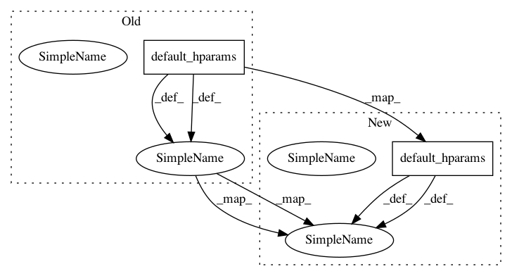

ff107ccfe3d954dc72512c8c9cdf14f547c08d8f,texar/modules/encoders/hierarchical_encoders_new.py,HierarchicalRNNEncoder,default_hparams,#,94
Before Change
"name": "hierarchical_encoder_wrapper"
}
hparams = {
"encoder_major": {
"class_name": "UnidirectionalRNNEncoder",
"hparams": UnidirectionalRNNEncoder.default_hparams(),
},
"encoder_minor": {
"class_name": "UnidirectionalRNNEncoder",
"hparams": UnidirectionalRNNEncoder.default_hparams(),
"share_config": False,
}
}
After Change
"name": "hierarchical_encoder_wrapper"
}
hparams = {
"name": "hierarchical_encoder",
"encoder_major_type": "UnidirectionalRNNEncoder",
"encoder_major_hparams": UnidirectionalRNNEncoder.default_hparams(),
"encoder_minor_type": "UnidirectionalRNNEncoder",
"encoder_minor_hparams": UnidirectionalRNNEncoder.default_hparams(),
"config_share": False,
"@no_typecheck": [
"encoder_major_hparams",
In pattern: SUPERPATTERN
Frequency: 3
Non-data size: 2
Instances
Project Name: asyml/texar
Commit Name: ff107ccfe3d954dc72512c8c9cdf14f547c08d8f
Time: 2018-05-17
Author: zhitinghu@gmail.com
File Name: texar/modules/encoders/hierarchical_encoders_new.py
Class Name: HierarchicalRNNEncoder
Method Name: default_hparams
Project Name: asyml/texar
Commit Name: fe3c56d1843822425f9b387966f1f660a1d16714
Time: 2017-09-28
Author: zhitinghu@gmail.com
File Name: txtgen/data/database.py
Class Name: MonoTextDataBase
Method Name: default_hparams